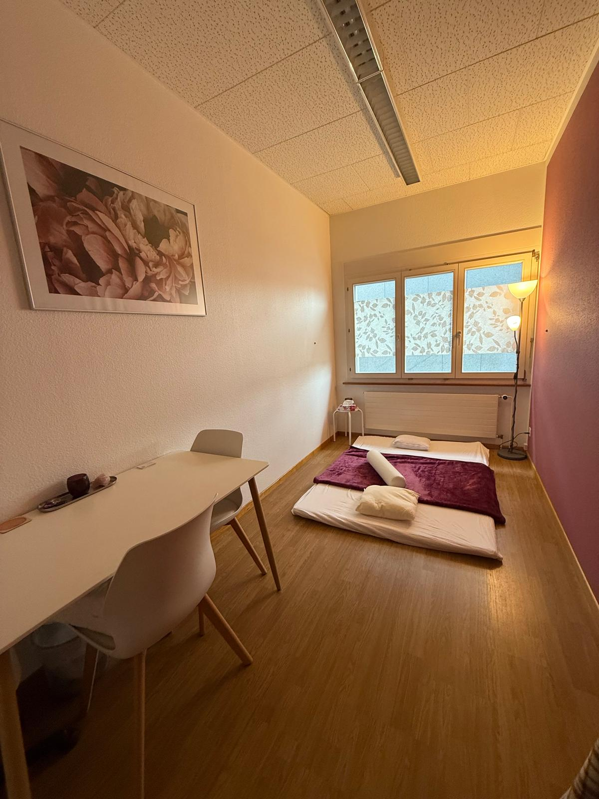
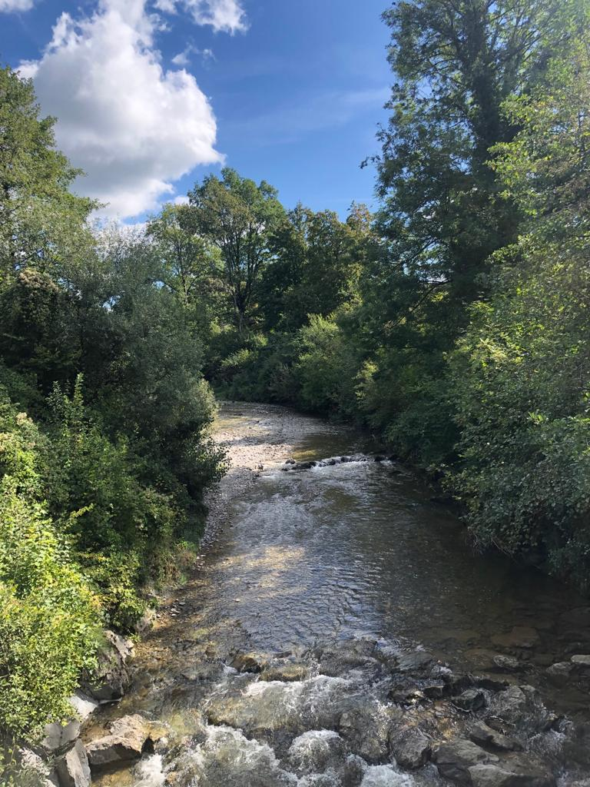

Mein Angebot
Jeder Mensch trägt die Fähigkeit zur Selbstregulation und inneren Ordnung in sich. Manchmal geraten wir jedoch aus dem Gleichgewicht – durch Belastungen, Erfahrungen oder Lebensumstände. In meiner Arbeit begleite ich dich achtsam und respektvoll auf deinem Weg zurück in deine eigene Kraft. Neben der Energiearbeit umfasst mein Angebot neu auch IBP Prozessbegleitung und Thai Yoga Massage. Die drei Methoden ergänzen sich und können je nach Anliegen einzeln oder kombiniert angewendet werden

Energiearbeit
Die Energiearbeit wirkt auf feinstofflicher Ebene. Blockaden im Energiesystem können erkannt und sanft gelöst werden. Dadurch entstehen mehr Klarheit, innere Ruhe und ein freierer Zugang zur eigenen Lebenskraft.
Eignet sich besonder bei:
- colors_spark Stress und Erschöpfung
- colors_spark Emotionale Belastungen
- colors_spark wiederkehrenden Mustern
- colors_spark dem Wunsch nach innerer Ausrichtung
Energetische Raumreinigung
Energiearbeit kann nicht nur den Menschen selbst unterstützen, sondern auch das Umfeld, in dem wir leben und arbeiten. Auch Räume tragen Erinnerungen, Stimmungen und Eindrücke. Wenn sich diese verdichten, kann die Atmosphäre eines Ortes als belastend oder unruhig empfunden werden.
Mögliche Einsatzbereiche:
- colors_spark Wohnungen und Häuser
- colors_spark Praxisräume
- colors_spark Arbeitsräume
- colors_spark nach Umzug oder Veränderungen

Thai Yoga Massage
Die Thai Yoga Massage ist eine ganzheitliche Körperarbeit, die Elemente aus Akupressur, sanften Dehnungen und achtsamer Berührung vereint. Sie wird am bekleideten Körper auf einer Matte am Boden durchgeführt. Durch rhythmischen Druck entlang der Energielinien sowie durch passive Dehnungen wird der Energiefluss angeregt, Verspannungen lösen sich und der Körper kann tief entspannen.
Sie wirkt:
- colors_spark vitalisierend und gleichzeitig beruhigend
- colors_spark lösend bei muskulären Spannungen
- colors_spark unterstützend bei Erschöpfung
- colors_spark ausgleichend für das Nervensystem.
Ideal für
Tiefe Entspannung & Körperbewusstsein

IBP Prozessbegleitung (Integrative Body Psychotherapy)
Die IBP Prozessbegleitung verbindet Körperwahrnehmung, Atem, Gespräch und achtsame Selbsterforschung. Viele unserer Prägungen und Erfahrungen sind im Körper gespeichert. Durch bewusstes Wahrnehmen, Verstehen und Integrieren können alte Muster transformiert und neue Handlungsspielräume eröffnet werden.
IBP unterstützt dich bei:
- colors_spark Beziehungsthemen
- colors_spark Selbstwertfragen
- colors_spark Übergängen und Lebenskrisen
- colors_spark emotionaler Regulation
- colors_spark persönlicher Entwicklung
Behandlung
Die Thai Yoga Massage wird am bekleideten Körper auf einer Matte am Boden durchgeführt. Eine Massage dauert ca. 70 – 90 Min. Preise nach Absprache.